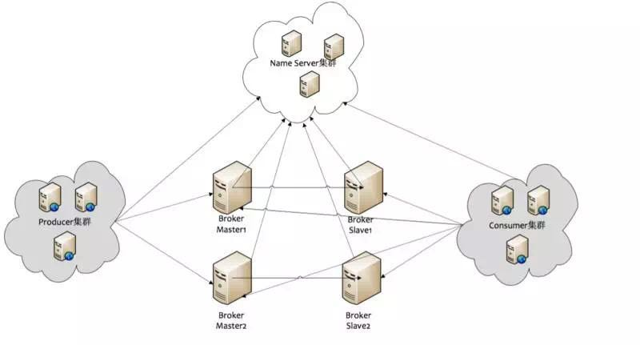

消息队列简介
记录学习RocketMQ的学习笔记
专业词汇
-
Producer
消息的生产者, 负责产生消息, 一般是业务系统集群
-
Consumer
消息的消费者,负责订阅消息并消费消息,一般也是业务系统集群
-
Push Consumer
应用通常向Consumer对象注册一个Listener接口, 一旦收到消息, Consumer对象回调Listener接口方法.
-
Pull Consumer
应用主动调用 Consumer 的拉消息方法从 Broker 拉消息，主动权由应用控制。
-
Producer Group
一类 Producer 的集合名称，这类 Producer 通常发送一类消息，且发送逻辑一致。
-
Consumer Group
一类 Consumer 的集合名称，这类 Consumer 通常消费一类消息，且消费逻辑一致。
-
Name Server Group
提供topic的路由信息,路由信息存储在内存中,broker会定时的发送路由信息到nameserver中的每一个机器，来进行更新，所以name server集群可以简单理解为无状态（实际情况下可能存在每个name server机器上的数据有短暂的不一致现象，但是通过定时更新，大部分情况下都是一致的）
-
Broker
消息中转角色，负责存储消息，转发消息，一般也称为 Server, 一个Broker集群有一个统一的名字,默认是DefaultCluster. 一个集群下有多个master，每个master下有多个slave。master和slave算是一组，拥有相同的brokerName,不同的brokerId，master的brokerId是0，而slave则是大于0的值。master和slave之间可以进行同步复制或者是异步复制。
-
广播消费
一条消息可以被多个消费者消费, 即使这些消费者在同一个Consumer Group 中.当使用广播消费模式时，MQ 会将每条消息推送给集群内所有注册过的客户端,保证消息至少被每台机器消费一次. 当出现消费失败的情况,并不会实现消息重投递.因此业务服务器需要关注失败的情况. 不推荐使用广播模式. 可以利用集群消费模式模拟广播消费模式.
-
集群消费
一个 Consumer Group 中的 Consumer 实例平均分摊消费消息。例如某个 Topic 有 9 条消息，其中一个 Consumer Group 有 3 个实例（可能是 3 个进程，或者 3 台机器），那么每个实例只消费其中的 3 条消息. 集群模式不能保证每次失败重投的消息都投放到同一台机器上.
-
顺序消费
消费消息的顺序要同发送消息的顺序一致，在 RocketMQ 中，主要指的是局部顺序，即一类消息为满足顺 序性，必须 Producer 单线程顺序发送，且发送到同一个队列，这样 Consumer 就可以按照 Producer 发送 的顺序去消费消息。
-
普通顺序消息
顺序消息的一种，正常情况下可以保证完全的顺序消息，但是一旦发生通信异常，Broker 重启，由于队列 总数发生变化，哈希取模后定位的队列会变化，产生短暂的消息顺序不一致。 如果业务能容忍在集群异常情况（如某个 Broker 宕机或者重启）下，消息短暂的乱序，使用普通顺序方 式比较合适。
-
严格顺序消息
顺序消息的一种，无论正常异常情况都能保证顺序，但是牺牲了分布式 Failover 特性，即 Broker 集群中只 要有一台机器不可用，则整个集群都不可用，服务可用性大大降低。 如果服务器部署为同步双写模式，此缺陷可通过备机自动切换为主避免，不过仍然会存在几分钟的服务不 可用。（依赖同步双写，主备自动切换，自动切换功能目前还未实现） 目前已知的应用只有数据库 binlog 同步强依赖严格顺序消息，其他应用绝大部分都可以容忍短暂乱序，推 荐使用普通的顺序消息。
-
Message Queue
在 RocketMQ 中，所有消息队列都是持久化，长度无限的数据结构，所谓长度无限是指队列中的每个存储 单元都是定长，访问其中的存储单元使用 Offset 来访问，offset 为 java long 类型，64 位，理论上在 100 年内不会溢出，所以认为是长度无限，另外队列中只保存最近几天的数据，之前的数据会按照过期时间来 删除。 也可以认为 Message Queue 是一个长度无限的数组，offset 就是下标。
RocketMQ架构

集群之间是如何进行通信交互的呢?
- Producer和Name Server：每一个Producer会与Name Server集群中的一台机器建立TCP连接，会从这台Name Server上拉取路由信息。